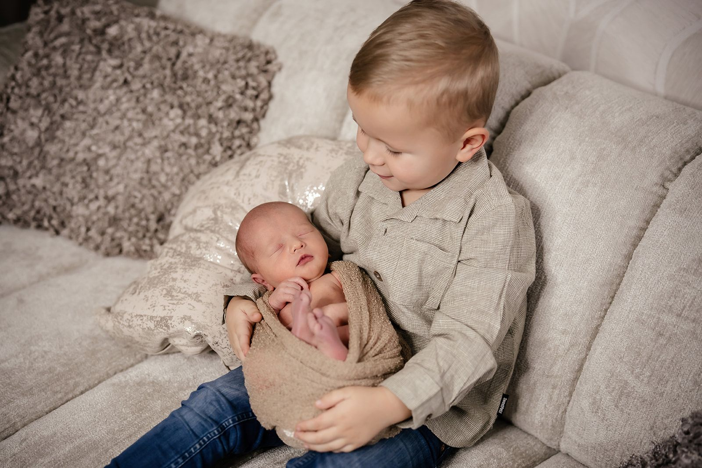
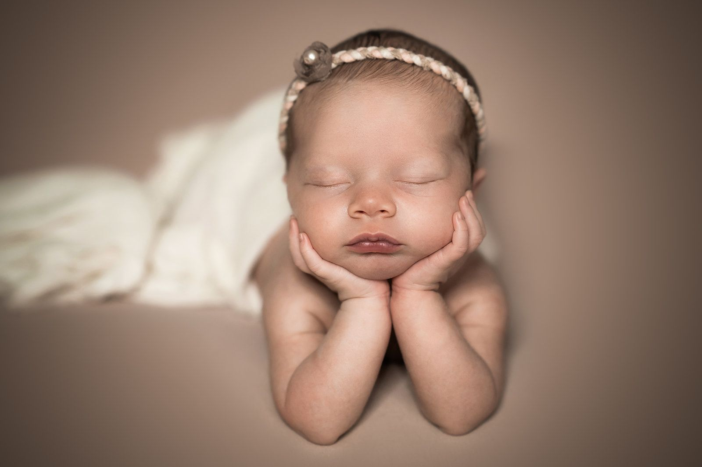
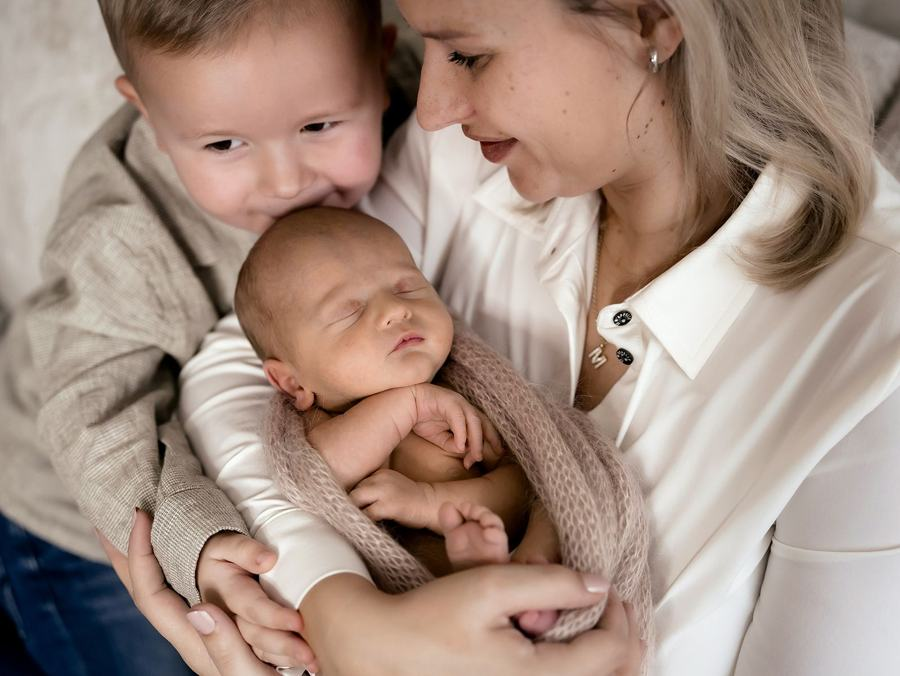
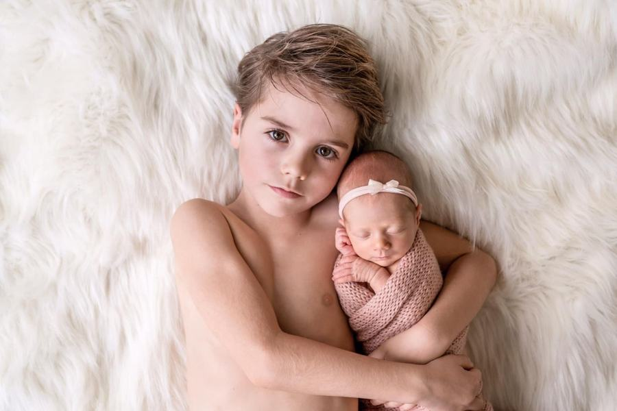
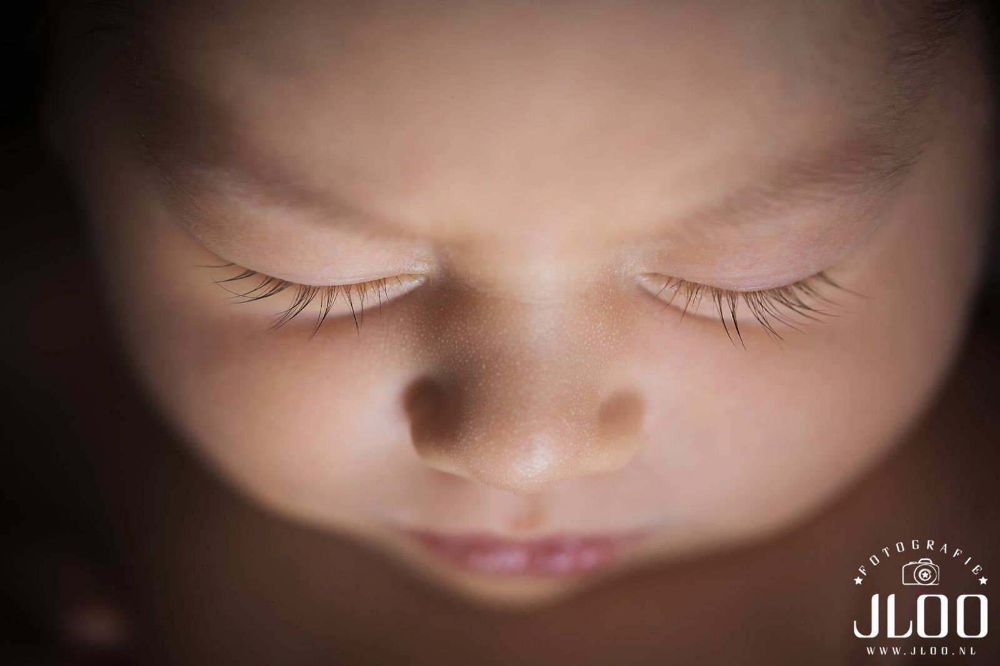

Newborn
De eerste dagen. Zacht en voor altijd.
Newbornfotografie
Styling Lionne Toet · fotografie Jeffrey van der Loo · studio in Herpt
Een newbornshoot vraagt om rust, geduld en zorg. Lionne is daarin gespecialiseerd: zij positioneert jullie baby comfortabel en veilig, terwijl Jeffrey het licht en de compositie verzorgt.
We combineren geposeerde beelden, in zachte doeken en mandjes, met spontane momenten van jullie als gezin. Zo krijg je een complete serie: artistieke portretten én echte knuffels.


Geposeerd én lifestyle. Het beste van beide.
In onze studio staat alles klaar: props, achtergronden, warme doeken en een aangename temperatuur. We nemen gemiddeld twee uur de tijd, met ruimte voor voeden en knuffelen.
Broertjes, zusjes en ouders doen natuurlijk mee. Die foto’s worden vaak de dierbaarste.





“Wij zijn super tevreden met het resultaat! Wat een engelengeduld hebben jullie toch.”Jamie Hoegen · Wijchen · Newborn
Praktisch
Zo plannen jullie de shoot.
Reserveer het liefst al tijdens de zwangerschap rond je uitgerekende datum. Na de geboorte laat je het ons weten en plannen we de shoot tussen dag 7 en 20.
Kom je uit Drunen, Waalwijk, Den Bosch, Tilburg of verder? Onze studio in Herpt is goed bereikbaar.
Pakket
studioshoot€350
- Met papa, mama, broertje of zusje
- 10 bewerkte foto’s naar keuze
- 300 tot 1.000 onbewerkte foto’s
- Ongeveer 2 uur in onze studio
Extra bewerkte foto €20 · mini-album €35 · alle foto’s op USB €30


Kennismaken
Vertel ons over jullie moment.
Een trouwdatum, een uitgerekende datum of gewoon een idee: stuur ons een berichtje. We reageren binnen 24 uur en nodigen jullie graag uit voor een kop koffie in de studio.
gemeente Heusden